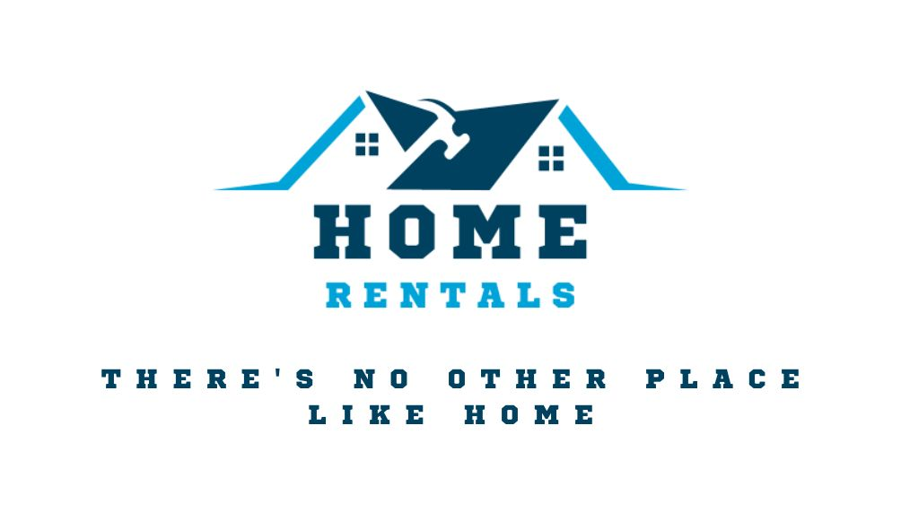

“The place where one lives permanently, especially as a member of a family or household.” However, for anyone who has had an actual home,
they would know that such a term goes much beyond its concrete description.
It is an impassioned aspect filled with values and foundation of nurturing. A home is not just an abode built to live in; in fact, that is just a definition of a house.
Home is a place where one not only feels comfortable, but a place they look forward to opportunely live in every day. A home is built not by bricks or wood, but with the bond of family.
A home is a place that reminds a person of countless memories and values.
A home gives people a place to care about the people that mean the most to them. It is a place to tell amusing tales, a good story, or make memorable memories with one another.
Furthermore, home is more than a place; it is a feeling. It is a feeling of contentment and happiness that they share with the ones they love.
Moreover, home is when one knows they are with people that can drive them insane in a second, and the same people can make them happy in a second as well.
Home means that no matter what one is going through, no matter how challenging life gets, there will be someone looking out for them.
One knows that a place is their home when they are comfortable enough to present a true description of themselves, because they know that they will receive definitive acceptance.